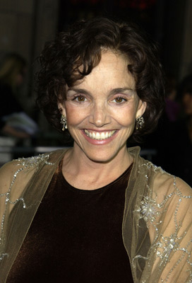
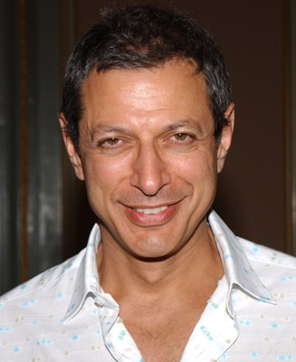
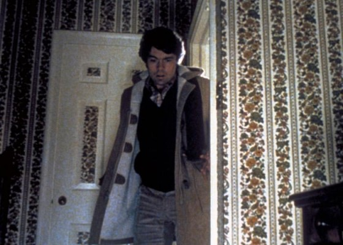
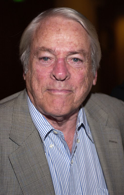

#4621 Die Körperfresser kommen
Alternativ: Invasion of the Body Snatchers

 IMDB-Wertung: 7.4 / 10
IMDB-Wertung: 7.4 / 10  Metascore: 0
Metascore: 0 
Die Angst kommt aus dem All! San Francisco wird von tückischen Lebewesen heimgesucht. Sie zerstören die Psyche und fressen den Körper. Ihr grausamer Terror breitet sich unaufhaltsam aus. Der Gesundheitsforscher Matthew Bennell (Donald Sutherland) erkennt als Erster: Eine tödliche Saat aus dem All bedroht alles Leben auf der Erde. Man sieht sie nicht, doch man weiß, dass sie da sind... es gibt kein Entrinnen!
Jahr: 1978
Dauer: 110 Minuten
FSK: 16
Land: USA Studio: United ArtistsTonspuren: DD2.0 - ,
Untertitel:
Auflösung: 1080p (1920x1040) Größe: 9451 MB
Genre: Horror, Sci-Fi
Regisseur:  Philip Kaufman
Philip Kaufman
Drehbuch: Diane Duane
Soundtrack:
Darsteller:
 Donald Sutherland als Matthew Bennell
Donald Sutherland als Matthew Bennell-  Brooke Adams als Elizabeth Driscoll
-  Jeff Goldblum als Jack Bellicec
 Veronica Cartwright als Nancy Bellicec
Veronica Cartwright als Nancy Bellicec- Leonard Nimoy als Dr. David Kibner
-  Art Hindle als Dr. Geoffrey Howell, DDS
-  Kevin McCarthy als Running man
- Don Siegel als Taxi Driver
- Tom Luddy als Ted Hendley
 Robert Duvall als Priest on Swing , uncredited
Robert Duvall als Priest on Swing , uncredited- Philip Kaufman als City Official on Phone , uncredited
- Lelia Goldoni als Katherine Hendley
- Stan Ritchie als Stan
- David Fisher als Mr. Gianni
 Tom Dahlgren als Detective
Tom Dahlgren als Detective- Garry Goodrow als Dr. Boccardo
- Jerry Walter als Restaurant Owner
- Maurice Argent als Chef
- Sam Conti als Street Barker
- Wood Moy als Mr. Tong
- R. Wong als Mrs. Tong
- Rose Kaufman als Outraged Woman
- Joe Bellan als Harry
- Sam Hiona als Policeman #1
- Lee McVeigh als Policeman #2
- Al Nalbandian als Rodent Man
- Lee Mines als Schoolteacher
- Misty als Harry's Boxer Dog
- Michael Chapman als Health Dept. Floor Cleaner , uncredited
- Anthony Garibaldi als Student , uncredited
- Kevin Harris als Dr. of pods , uncredited
- Al Perez als PG&E Man , uncredited
- Jeff Scheftel als Pod Person at Party , uncredited
Datei: X:\1978\Körperfresser kommen, Die (1978, FSK16, 1920x1040).mkv seit 24.10.2016
Festplatte: HD 1971-1979
 Es gibt insgesamt 31 Filme in der Gruppe '1978'
Es gibt insgesamt 31 Filme in der Gruppe '1978'